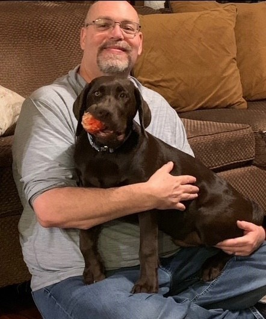

Purpose before product
Every interaction should help the pet parent—not only the platform.

"You cannot improve what you do not understand."
The Founder Story
Pet health information is everywhere—confusing and untrustworthy. After 30 years solving operational problems across manufacturing, supply chains, and sales—including running operations for contract manufacturers in the supplement industry—I've seen what happens when an industry lacks transparency and honest information. I even co-founded a small CBD brand for dogs and cats. That's exactly why I'm not watching this continue to happen to our pets, and exactly why Companion Commons will never sell or promote a product.
I'm building Companion Commons: a clear, trusted pet health intelligence community where every pet deserves to be better understood and every pet family deserves trusted information that isn't designed to sell them something.
This is the most ambitious challenge of my life.
Our Mission
Today, pet health information is scattered and fragmented across veterinary visits, products, supplements, and individual experiences.
Our mission is to create the most trusted source of pet health understanding built on transparency, community, and independence.
Every interaction should help the pet parent—not only the platform.
We explain how information is protected, combined, and used.
Shared insights demonstrate the value of continued participation.
Our category
Real experiences from real pet parents can fill gaps in fragmented pet health understanding—one 12-week journey at a time.